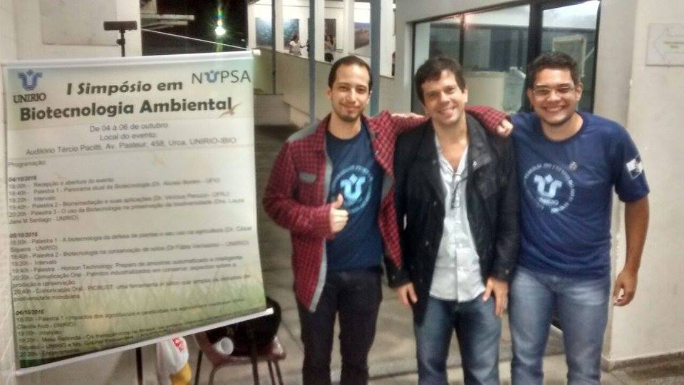

Portfólio de Eduardo Saatkmp
Breve Apresentação


Meu contato com programação
Oficina de Robótica
Atividades: Desenvolvida pelos alunos da Escola Técnica Estadual Ferreira Viana como uma atividade extracurricular, consistia em aplicar conhecimentos de programação para diferentes desafios através de três tecnologias: Robotis Bioloid, Lego e Arduino. Nesse contexto, a minha principal atuação foi com a primeira tecnologia, na qual utilizava de linguagem C para elaborar seus movimentos.
INÍCIO